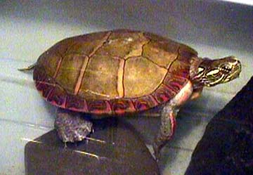

QUESTION 9:

Is all this image and text positioning true to the idea of a markup language where only functional roles are specified?
<img src="petrock.jpg" align="right" />
hspace and vspace
The image on the previous may have text positioned right next to its edges.
It looks better to have some space around the image.
To ask for (say) 10 pixels of horizontal space to surround the image use
the img tag attribute
hspace="10", and to ask for (say) 15 pixels of vertical
space use vspace="15" as here:
<img src="petrock.jpg" align="left" hspace="10" vspace="15">
This is how this works:

This text will appear to the right of the
image.
It should look less cramped
than the text on the previous page
because the IMG tag used the
hspace="10" and vspace="15" attributes.
Now there are 10 pixels of space between the right edge of the image and the start of the text and the right. And there are 15 pixels of space between the bottom edge of the image and the paragraph that follows it. Just following this paragrpah the tag <br clear="all"> is used so that the next paragraph is not spit up (but this depends somewhat on how you have set up your browser and what resolution your monitor is set to.)
You may have noticed that the previous few pages have displayed the image with little delay. This is because the same image has been used several times. Your browser temporarily stores the image (or other resource) in case it is is needed again, thus saving download time. These resources have been stored in the browser's cache, an area of your hard disk. Use the "preferences" menu of the browser to change this behavior, if you want.
Is all this image and text positioning true to the idea of a markup language where only functional roles are specified?